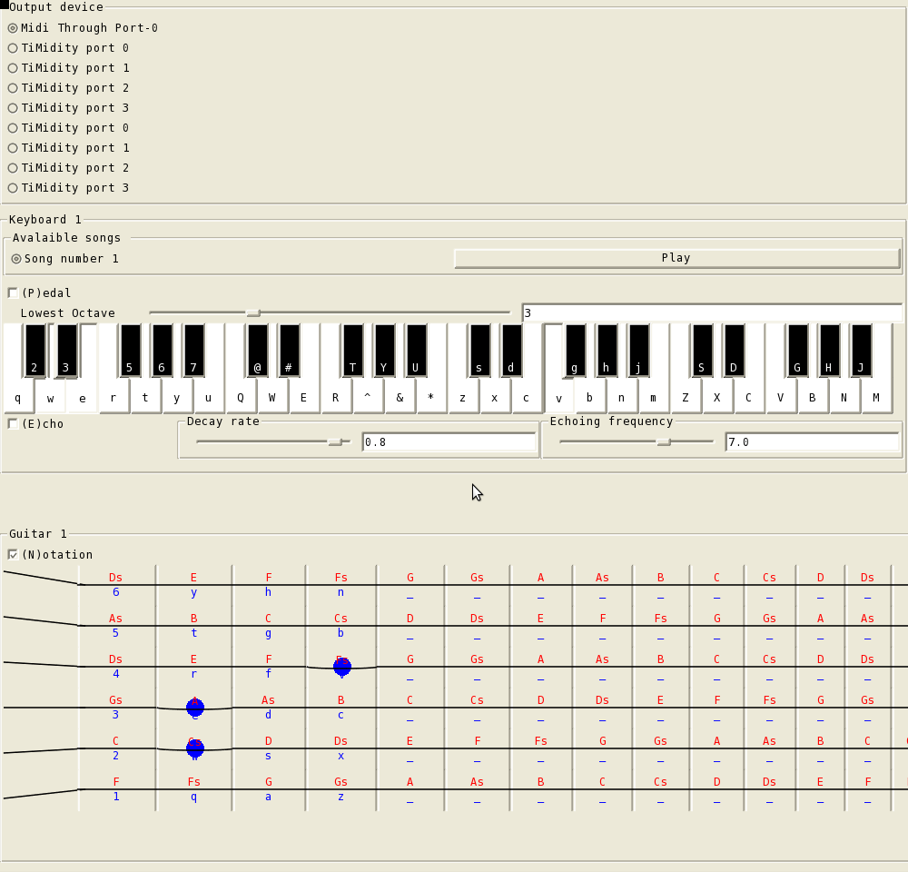
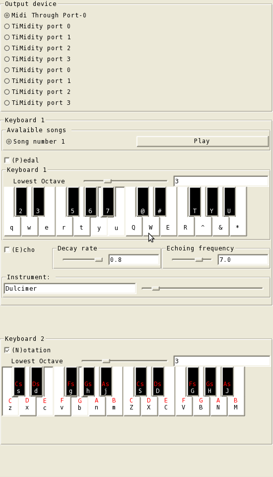

Functional Reactive Programming (FRP) is a programming paradigm for reactive programming using the building blocks of functional programming to model hybrid systems containing both continuous time-varying behaviors and discrete events. FRP has been applied to a variety of systems, including computer animation [EH97], robotics [HCNP02], and real-time systems [WTH01].
In computer music, we want to expose to the programmer the notion of discrete notes, events, and continuous audio signals, as well as the transition and interaction between these entities. The hybrid and dynamic nature of the problem makes FRP a good choice for modeling computer music systems.[E09]
Euterpea [HMGW96], a domain-specific language (DSL) built on top of Haskell, takes an algebraic approach to high-level music description and composition. Euterpea has built-in functions to represent notes, rhythms, chords and many more. In Euterpea a basic set of widgets is provided that are collectively referred to as the Graphical Music Interface (GMI). [H08]
However, Euterpea GMI currently provides only a limited set of UI widgets that can only create buttons, value sliders, checkboxes, radio buttons, text displays, and allow MIDI input and output. This project sets out to add to Euterpea two high-level, sophisticated widgets: a piano keyboard and a guitar fretboard. There are four goals in mind. First, the design and implementation should be as generic as possible, maximizing common features to be shared by a piano keyboard and a guitar fretboard. Second, the design should reflect real life instruments. For example, the virtual piano keyboard should behave almost identical to a MIDI keyboard that can be plugged into a computer for MIDI input; a pedal can be attached to it and there are nobs to change various settings such as echo, transpose, etc. Third, the interface must not only be simple enough to customize and use, but also support a rich set of features such as echo, transpose, pedal, import-song, change-instrument and MIDI output. Finally, I discuss the challenges encountered during the development and potential contributions of these widgets to a Euterpea user.
| Screenshot of a piano keyboard and a guitar fretboard | Screenshot of 2 piano keyboards widgets |
|---|---|
|  |  |